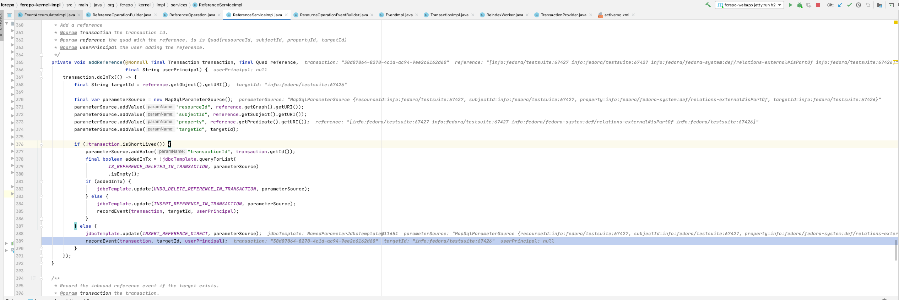

java -jar migration-utils-6.2.0-SNAPSHOT-driver.jar -t legacy -d brown/repoarchive/datastreams_2019/2019 -o brown/repostore/data_2019/objects/2019 -a brown-migrated
FCREPO-3792 NPE when emitting an event during reindex
| Type | Bug |
|---|---|
| Status | Closed |
| Resolution | Fixed |
| Priority | Medium |
| Reporter | Peter Winckles |
| Assignee | Danny Bernstein |
| Created | 2021-11-17 18:37 UTC |
| Updated | 2021-11-22 21:22 UTC |
| Resolved | 2021-11-22 18:35 UTC |
| Components | core |
| Affects versions | Fedora 6.1.0 |
| Fix versions | Fedora 6.1.1 |
Description
I attempted to start Fedora on top of the sample Brown content and received the following errors while it was reindexing:
ERROR 12:29:47.702 [ReindexWorker-0] (EventAccumulatorImpl) Failed to emit events: [ResourceOperationEventBuilder{fedoraId=info:fedora/testsuite:67423, types=[INBOUND_REFERENCE], resourceTypes=[http://www.w3.org/ns/ldp#Resource, http://www.w3.org/ns/ldp#Container, http://fedora.info/definitions/v4/repository#ArchivalGroup, http://fedora.info/definitions/v4/repository#Resource, http://fedora.info/definitions/v4/repository#Container, http://mementoweb.org/ns#TimeGate, http://www.w3.org/ns/ldp#RDFSource, http://mementoweb.org/ns#OriginalResource, http://www.w3.org/ns/ldp#BasicContainer], userID='null', userAgent='null', baseUrl='null', date=2021-11-17T18:29:47.612183482Z}]
java.lang.NullPointerException: baseUrl cannot be null
at com.google.common.base.Preconditions.checkNotNull(Preconditions.java:907)
at org.fcrepo.kernel.impl.observer.EventImpl.<init>(EventImpl.java:60)
at org.fcrepo.kernel.impl.observer.ResourceOperationEventBuilder.build(ResourceOperationEventBuilder.java:137)
at org.fcrepo.kernel.impl.observer.EventAccumulatorImpl.lambda$emitEvents$1(EventAccumulatorImpl.java:90)
at com.google.common.collect.Maps$KeySet.lambda$forEach$0(Maps.java:3916)
at java.base/java.util.HashMap.forEach(HashMap.java:1420)
at com.google.common.collect.Maps$KeySet.forEach(Maps.java:3916)
at org.fcrepo.kernel.impl.observer.EventAccumulatorImpl.emitEvents(EventAccumulatorImpl.java:79)
at org.fcrepo.kernel.impl.TransactionImpl.commit(TransactionImpl.java:100)
at org.fcrepo.persistence.ocfl.impl.ReindexWorker.lambda$run$0(ReindexWorker.java:107)
at org.fcrepo.common.db.DbTransactionExecutor.lambda$doInTx$3(DbTransactionExecutor.java:79)
at org.springframework.transaction.support.TransactionOperations.lambda$executeWithoutResult$0(TransactionOperations.java:68)
at org.springframework.transaction.support.TransactionTemplate.execute(TransactionTemplate.java:140)
at org.springframework.transaction.support.TransactionOperations.executeWithoutResult(TransactionOperations.java:67)
at org.fcrepo.common.db.DbTransactionExecutor.doInTx(DbTransactionExecutor.java:78)
at org.fcrepo.common.db.DbTransactionExecutor.lambda$doInTxWithRetry$2(DbTransactionExecutor.java:62)
at net.jodah.failsafe.Functions.lambda$toSupplier$10(Functions.java:262)
at net.jodah.failsafe.Functions.lambda$get$0(Functions.java:48)
at net.jodah.failsafe.RetryPolicyExecutor.lambda$supply$0(RetryPolicyExecutor.java:66)
at net.jodah.failsafe.Execution.executeSync(Execution.java:128)
at net.jodah.failsafe.FailsafeExecutor.call(FailsafeExecutor.java:379)
at net.jodah.failsafe.FailsafeExecutor.run(FailsafeExecutor.java:212)
at org.fcrepo.common.db.DbTransactionExecutor.doInTxWithRetry(DbTransactionExecutor.java:61)
at org.fcrepo.persistence.ocfl.impl.ReindexWorker.run(ReindexWorker.java:105)
at java.base/java.lang.Thread.run(Thread.java:833)
ERROR 12:29:57.426 [ReindexWorker-1] (EventAccumulatorImpl) Failed to emit events: [ResourceOperationEventBuilder{fedoraId=info:fedora/testsuite:67423, types=[INBOUND_REFERENCE], resourceTypes=[http://www.w3.org/ns/ldp#Resource, http://www.w3.org/ns/ldp#Container, http://fedora.info/definitions/v4/repository#ArchivalGroup, http://fedora.info/definitions/v4/repository#Resource, http://fedora.info/definitions/v4/repository#Container, http://mementoweb.org/ns#TimeGate, http://www.w3.org/ns/ldp#RDFSource, http://mementoweb.org/ns#OriginalResource, http://www.w3.org/ns/ldp#BasicContainer], userID='null', userAgent='null', baseUrl='null', date=2021-11-17T18:29:57.400489539Z}]
java.lang.NullPointerException: baseUrl cannot be null
at com.google.common.base.Preconditions.checkNotNull(Preconditions.java:907)
at org.fcrepo.kernel.impl.observer.EventImpl.<init>(EventImpl.java:60)
at org.fcrepo.kernel.impl.observer.ResourceOperationEventBuilder.build(ResourceOperationEventBuilder.java:137)
at org.fcrepo.kernel.impl.observer.EventAccumulatorImpl.lambda$emitEvents$1(EventAccumulatorImpl.java:90)
at com.google.common.collect.Maps$KeySet.lambda$forEach$0(Maps.java:3916)
at java.base/java.util.HashMap.forEach(HashMap.java:1420)
at com.google.common.collect.Maps$KeySet.forEach(Maps.java:3916)
at org.fcrepo.kernel.impl.observer.EventAccumulatorImpl.emitEvents(EventAccumulatorImpl.java:79)
at org.fcrepo.kernel.impl.TransactionImpl.commit(TransactionImpl.java:100)
at org.fcrepo.persistence.ocfl.impl.ReindexWorker.lambda$run$0(ReindexWorker.java:107)
at org.fcrepo.common.db.DbTransactionExecutor.lambda$doInTx$3(DbTransactionExecutor.java:79)
at org.springframework.transaction.support.TransactionOperations.lambda$executeWithoutResult$0(TransactionOperations.java:68)
at org.springframework.transaction.support.TransactionTemplate.execute(TransactionTemplate.java:140)
at org.springframework.transaction.support.TransactionOperations.executeWithoutResult(TransactionOperations.java:67)
at org.fcrepo.common.db.DbTransactionExecutor.doInTx(DbTransactionExecutor.java:78)
at org.fcrepo.common.db.DbTransactionExecutor.lambda$doInTxWithRetry$2(DbTransactionExecutor.java:62)
at net.jodah.failsafe.Functions.lambda$toSupplier$10(Functions.java:262)
at net.jodah.failsafe.Functions.lambda$get$0(Functions.java:48)
at net.jodah.failsafe.RetryPolicyExecutor.lambda$supply$0(RetryPolicyExecutor.java:66)
at net.jodah.failsafe.Execution.executeSync(Execution.java:128)
at net.jodah.failsafe.FailsafeExecutor.call(FailsafeExecutor.java:379)
at net.jodah.failsafe.FailsafeExecutor.run(FailsafeExecutor.java:212)
at org.fcrepo.common.db.DbTransactionExecutor.doInTxWithRetry(DbTransactionExecutor.java:61)
at org.fcrepo.persistence.ocfl.impl.ReindexWorker.run(ReindexWorker.java:105)
at java.base/java.lang.Thread.run(Thread.java:833)
Attachments
- Screen Shot 2021-11-18 at 2.46.50 PM.png, 274233 bytes, added by Danny Bernstein on 2021-11-19
Comments (7)
Peter Winckles, 2021-11-18 15:58 UTC
Danny Bernstein, 2021-11-18 20:09 UTC
Yeah - this looks like it will be a problem for all rebuilds. I think a point release is going to be required.
Danny Bernstein, 2021-11-18 20:19 UTC
The base uri gets set properly when the transaction is created via the http api. But this is not the case when it is created in the reindexing process.
Danny Bernstein, 2021-11-18 20:31 UTC
The problem does not show up with resources sans inbound refs which is less embarrassing. But even more surprising, when creating a resource with inbound references there is no problem rebuilding that either.
Danny Bernstein, 2021-11-19 04:30 UTC
So it appears that events are being emitted in the rebuild flow here:

When an event is generated by a call to the http api, it always passes through the TransactionProvider which ensures there is a value set for the baseUrl. Not so for the rebuild flow.
But as I understand it we should not be generating events at all during the rebuild. So I’ll create a fix that suppresses all events during the rebuild.
Danny Bernstein, 2021-11-19 17:36 UTC
I’m getting set up to reproduce the issue here. What were the migration-utils params you used to generated the OCFL?